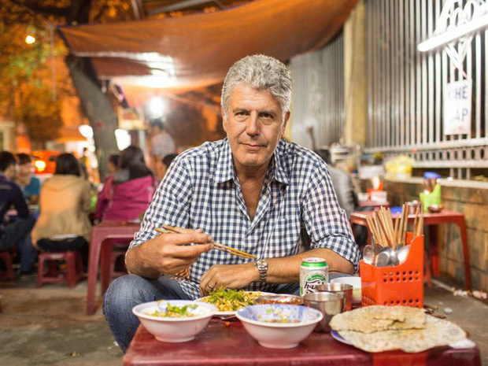

The Land Of Bold Spices And Vibrant Colors
Anthony Bourdain, the late celebrity chef, television personality, and esteemed food critic for CNN, was famously captivated by Bun Bo Hue, the iconic beef noodle soup from Central Vietnam. During his visit to Dong Ba Market in Huế, he sampled the dish and declared it “The most delicious soup I have ever had in the world.” His experience serves as a testament that Vietnam’s cuisine is not only diverse but also capable of impressing even the most seasoned global chefs and food critics.
